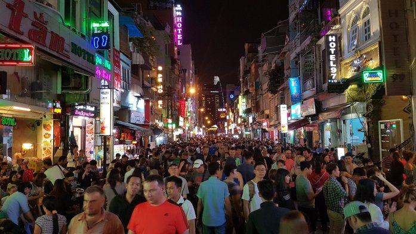
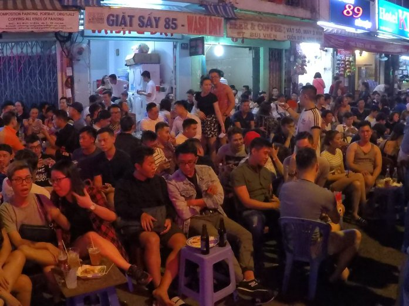
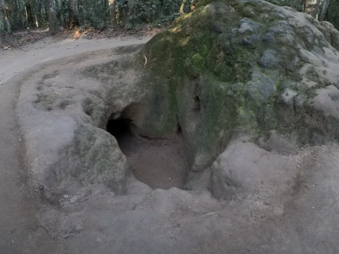
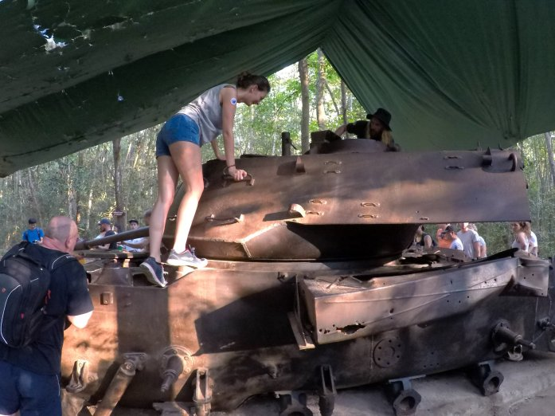
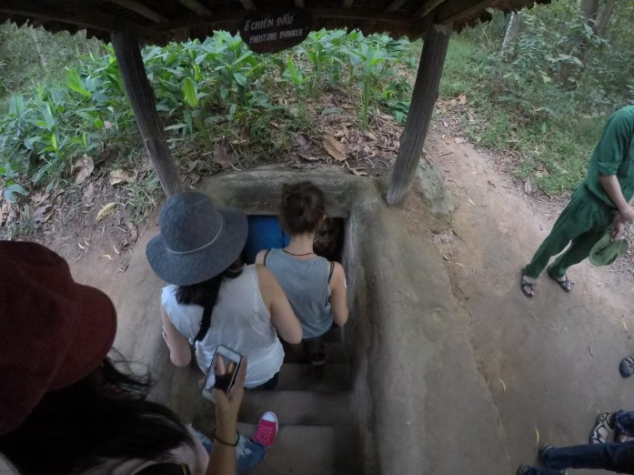

Ciao a tutti 🙂
In diretta dall’aeroporto di Hong Kong (siamo un po’ in ritardo con l’aggiornamento del blog) scriviamo qualche riga su Ho Chi Minh, ex capitale del Vietnam del Sud e un tempo conosciuta con il nome di Saigon.
Per la prima volta abbiamo attraversato un confine (Cambogia – Vietnam ) in bus! Ci hanno controllato i bagagli e i documenti come se fossimo in aeroporto e, dopo lunghe ore di viaggio, siamo arrivati nella nostra centralissima Homestay (50m dal terminal dei bus e 100m dal centro città.. che cü) con qualche ora di ritardo.. abbiamo poi scoperto che il traffico era tutto in centro città, causa miriade di scooter per le strade! Pensavamo che il primato per le strade sovraffollate lo detenesse Bangkok, invece the winner is Ho Chi Minh. Non scherzo quando dico che abbiamo rischiato più volte la pelle per attraversare 😯
Città più grande del Vietnam (ca. 3.5M abitanti) Ho Chi Minh ci ha stupito per la mescolanza di stili: aree con palazzi moderni pieni di negozi di lusso, affiancati da semplici capannoni colmi di stand nei quali la gente locale vendeva riproduzioni tarocche (o forse no?) di varie marche. Alcuni stand vendevano vestiti con ancora affissa l’etichetta dell’H&M con prezzo in Euro.. ci siamo chiesti infatti se siano gli stessi vestiti venduti dalle nostre parti o semplici riproduzioni. Il Vietnam in ogni caso è riconosciuto come uno dei paesi che commercia beni contraffatti di altissima qualità (l’abbiamo constatato in prima persona quando ad Hanoi, al nord del Vietnam, abbiamo comprato alcuni indumenti–> eravamo tentati di comprare molte più cose, se solo ci fossero state nei nostri zaini).
Di notte il centro città è pazzesco, si trasforma completamente: musica fortissima proveniente da ogni bar, migliaia di persone riversate per strada (in piedi o sedute su mini sgabelli che i bar posizionano in mezzo alla strada e che la polizia regolarmente sequestra), live show e karaoke, discoteche, prostituzione e droga (ad ogni passo ci fermavano per offrircene). Grande contrasto rispetto alla quiete delle spiagge cambogiane… però ci voleva un po’ di movimento 😉
 Di seguito alcuni highlights:
- Ho mangiato il migliore hamburger di sempre (con tanto di cipolla grandezza record)
- I Vietnamiti (poi abbiamo scoperto soprattutto i Cinesi) scatarrano e snariciano in continuazione senza pudore in giro per strada (poi ti guardano male se ti soffi il naso con il fazzoletto..)
- Qui non esistono i tuc tuc: a sostiruirli c’è Grab, un servizio taxi simile a Uber. Offre corse sia in auto che in scooter, è efficientissimo e poco costoso
- Siamo milionariii! 40 franchi sono 1 milione di dong
Durante il nostro soggiorno a Ho Chi Minh abbiamo visitato i Cu Chi Tunnels, a qualche ora di distanza dal centro. Quello che durate la guerra del Vietnam (qui la chiamano guerracontro l’America) era un luogo in cui vivevano e si nascondevano i vietnamiti, è ora un punto d’interesse in cui abbiamo potuto esplorare i famosi tunnel Cu Chi: un sistema di corridoi e stanze sotterranee di oltre 250km che offriva riparo ai vietnamiti dagli attacchi. Noi ne abbiamo attraversato una piccola parte (80m): mancava ossigeno e dava davvero una sensazione di claustrofobia sebbene questo tratto fosse stato addirittura allargato del 30% rispetto alle dimensioni originali per facilitarne l’accesso ai turisti!!
  Nel parco c’era anche uno stand di tiro in cui abbiamo provato a sparare 5 proiettili a testa con un MG. Adrenalina a mille e timpani bucati!
Il giorno seguente siamo andati a visitare il Museo della Guerra. La guerra del Vietnam si svolse soprattutto nel sud del paese dal 1955 al 1975 (caduta di Saigon); segnò una delle pagine più tristi e sanguinose nella storia del secondo dopoguerra (oltre 5M di vittime vietnamite).
L’esposizione di fotografie e la documentazione delle persone che sono state esposte all’agent orange ci hanno colpito molto.. gli americani, per scovare i vietnamiti, versarono milioni di litri di questo agente chimico nelle foreste, disboscandole. Il principale effetto collaterale si manifesta tramite mutazioni genetiche di vario tipo che persistono per molte generazioni; infatti, ancora oggi, nascono bambini affetti da gravi disturbi. Solitamente non sono facilmente impressionabile, ma in questo caso molte foto non sono riuscita a guardarle. Durante alcuni viaggi in bus abbiamo sostato in “aree di servizio” dove lavoravano alcune persone colpite dall’agente chimico (il governo vietnamita li sostiene provvedendo loro semplici impieghi che altrimenti non avrebbero l’opportunità di fare).
Comment Section